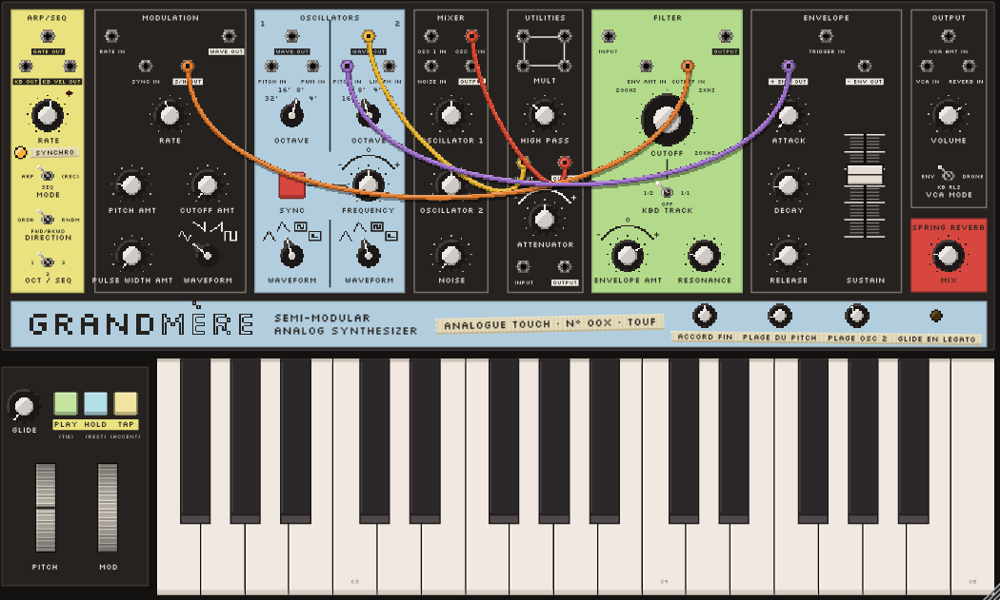
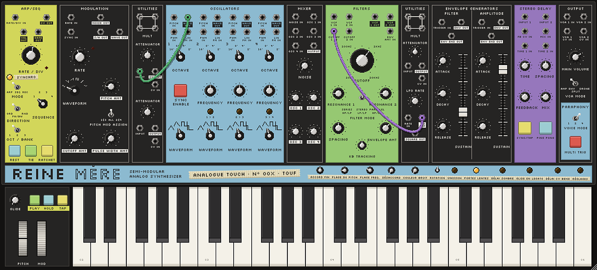

Analogue Touch : la régie

{{ titreLecture }}{{ titreLu }}
Grand-mère

N° 006 · COLLECTION
Reine Mère

N° 006 · COLLECTION
LE CARNET DE TRAVAIL
Je m'appelle Touf. Je refais en plugin, d'après leur circuit, des synthés et des machines de studio que j'aime, avec l'IA. C'est gratuit, sans compte, et tout le code est public.
Ce carnet garde tout ce qui ne tient pas sur une façade : comment les installer, comment elles sont faites, et ce qui a changé.
Fait par Touf. À écouter au casque.
1DANS CE CARNET
- P. 3
- P. 5
- P. 7
- P. 9
Le code et les mesures sont faits avec Claude, une IA. J'écoute le son et je relis les textes. Les façades et ces pixels sont dessinés par des programmes écrits avec Claude.
2INSTALLER, SUR WINDOWS
- Télécharge le zip de la bêta (les téléchargements arrivent bientôt).
- Dézippe-le : tu obtiens un dossier Grandmere.vst3 ou Reine Mere.vst3.
- Copie ce dossier entier dans :
C:\Program Files\Common Files\VST3
Windows peut te demander d'être administrateur pour écrire dans ce dossier. - Relance la recherche de plugins dans ton logiciel de musique.
Sur Mac : plus tard.
3ELLE N'APPARAÎT PAS ?
- Vérifie que tu as copié le dossier .vst3 entier, pas seulement ce qu'il contient.
- Vérifie dans les réglages de ton logiciel qu'il cherche bien les plugins VST3 dans ce dossier.
- Sinon, signale le problème sur GitHub (nouvel onglet) : dis-moi ton logiciel et ta version de Windows.
D'APRÈS LE CIRCUIT
- Le schéma. Je pars du schéma publié et du manuel de la machine, jamais de son code.
- Le circuit en code. Chaque étage est réécrit composant par composant, avec l'IA.
- La mesure. Les rendus sont mesurés, et les chiffres sont publiés avec le code.
- L'oreille. Rien ne change dans le son sans que je l'aie écouté.
CE QU'IL FAUT SAVOIR
Ce n'est pas un produit officiel ni une copie du code d'origine : aucun lien avec les fabricants. C'est une bêta, faite avec Claude, une IA, puis écoutée et relue par moi.
Ce que l'IA a coûté : [jetons à relever].
Grand-mère tourne sur 5,6 % d'un cœur de processeur à 48 kHz, mesuré le 18/11/2026.
Le code, les mesures et les décisions sont sur GitHub (nouvel onglet)
6LE JOURNAL
- 12/11/2026La collection s'appelle Analogue Touch.
- 12/11/2026Les façades passent en pixel art, aux teintes d'origine. Le son ne change pas d'un bit.
- 18/11/2026Le logo : un seul cycle de dent de scie, qui écrit A et T.
- 18/11/2026Le code est public, sous licence AGPLv3.
- 18/11/2026Première sortie : Grand-mère et Reine Mère, en bêta.
- 19/11/2026Le site devient une régie de studio.
PAR MACHINE
GRAND-MÈRE
- 12/11/2026Version 5 : trois changements choisis à l'oreille.
- 18/11/2026Coût mesuré : 5,6 % d'un cœur de processeur à 48 kHz.
REINE MÈRE
- 10/11/2026Version 4 : 63 réglages.
Le journal complet sur GitHub (nouvel onglet)
8UN POURBOIRE, PAS UN PRIX
Les plugins sont gratuits, sans compte, et le code est public. Si tu veux m'aider à en refaire d'autres, tu peux me laisser un pourboire. Il ne débloque rien : c'est un merci.
Signaler un problème aide aussi.
9OÙ ÇA SE PASSE
- Le pourboire passera par Ko-fi, à la page « Touf - Analogue-touch » (bientôt en ligne).
- Signaler un problème (nouvel onglet) sur GitHub.
- Le code (nouvel onglet), sous licence AGPLv3 (nouvel onglet).
Les machines d'origine appartiennent à leurs fabricants. Aucun lien avec eux.
10